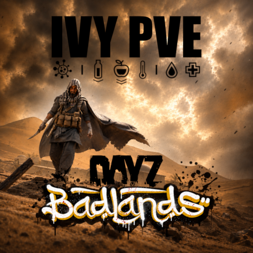

IVY MOTORPOOL / 001
▰
Desert Runner
A placeholder for your go-to transport vehicle. Replace this section with a real screenshot and accurate server details.
STORAGEADD VALUE
FUELADD TYPE
ACCESSADD METHOD

IVY PVEMOTORPOOL / 04
Choose your ride. Plan your route. Watch your fuel.
MOTORPOOL REGISTER
Use this page to feature the vehicles available on your server. Add screenshots from in-game, vehicle names, storage capacity, fuel type and spawn or trader information.
A placeholder for your go-to transport vehicle. Replace this section with a real screenshot and accurate server details.
Showcase a larger vehicle for hauling supplies, supporting expeditions or moving equipment between safe locations.
Use this slot for a specialist or rare vehicle. Explain its strengths, limitations and where players can find it.
VEHICLE OWNERS
Add your server's vehicle repair, storage, despawn and safe-driving rules here.